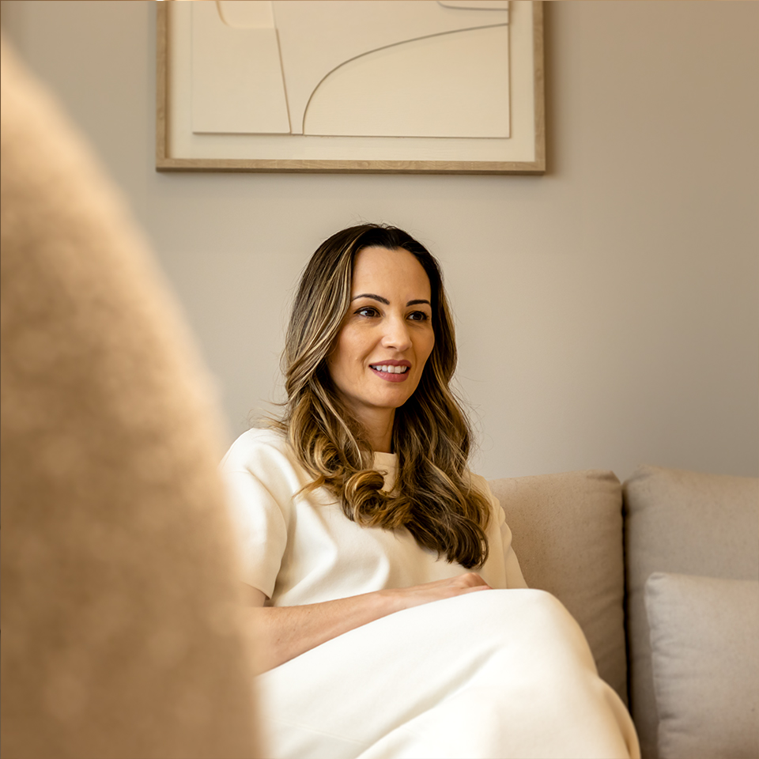
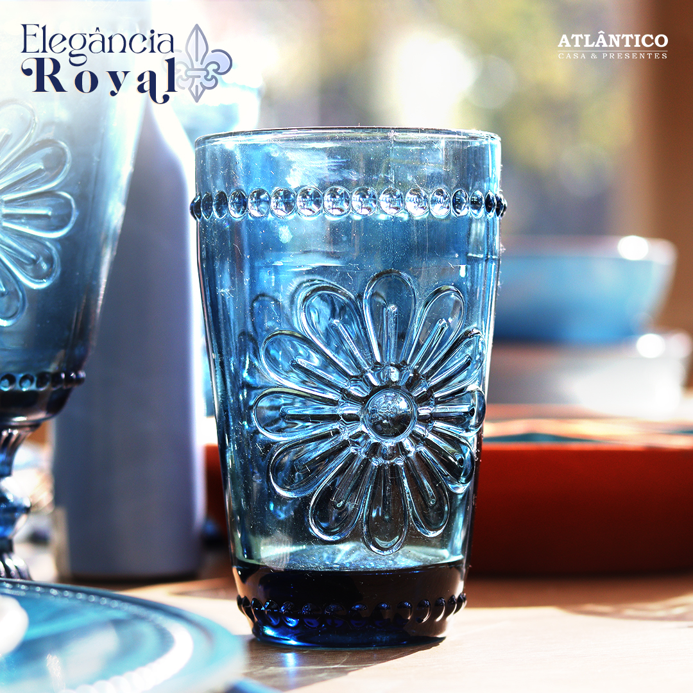

Portfólio



Endereço: Rua José Roque Salton 177, Londrina-PR
Telefone: (43) 99827-9860
E-mail: felipetivanello23@gmail.com
GitHub: github.com/felipetivanello
LinkedIn: /in/
Sou gerente de marketing da Atlântico Casa e Presentes, onde lidero todas as iniciativas de marketing, abrangendo desde mídias sociais até campanhas de outdoor. Com 4 anos de experiência, desenvolvi habilidades sólidas em fotografia, filmagens e edição de fotos e vídeos, utilizando ferramentas como Photoshop, Illustrator e CapCut. Minha trajetória inclui atuação como designer gráfico em outras empresas, onde produzi artes gráficas para impressão e formatos digitais. Tenho um forte histórico de gerenciamento de equipes, garantindo a execução eficaz de projetos e a maximização do engajamento com o público-alvo.
Cargo: Gerente de Marketing
Responsabilidades: Gestão de marketing
Período: 28 de junho de 2023 - Presente
Ensino Médio Completo (2021)
Cursando Análise e Desenvolvimento de Sistemas - UP